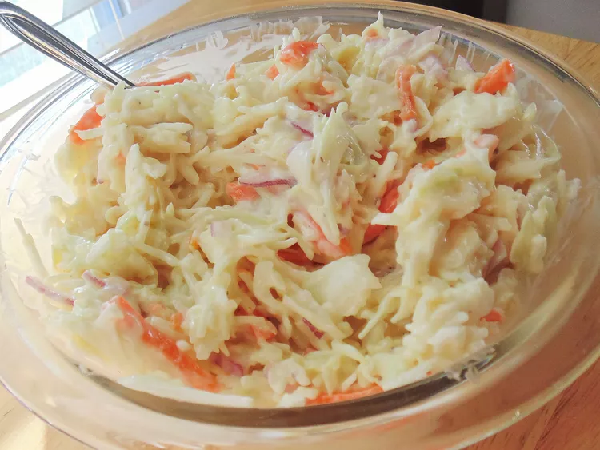

Coleslaw Recipe

Description
No fuss, no muss with this easiest coleslaw ever.
Ingredients
- 1 (16 ounce) bag coleslaw mix
- 1 cup mayonnaise
- ¼ cup white sugar, or to taste
- 2 tablespoons cider vinegar
- ½ teaspoon onion powder
- salt and ground black pepper to taste
Steps
- Place coleslaw mix in a large bowl.
- Combine mayonnaise, sugar, vinegar, onion powder, salt, and pepper in a small bowl.
- Pour mayonnaise mixture over coleslaw mix and toss to coat.
- Refrigerate for at least 30 minutes; serve with a slotted spoon.